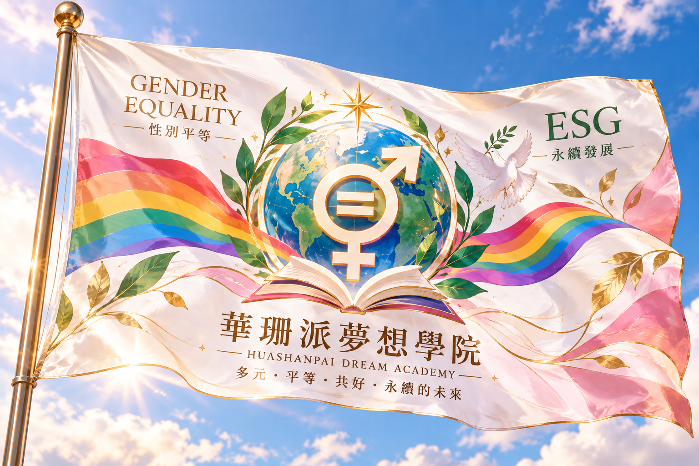

🌈 記得你的名字
Remember Your Name · Taiwan, Freedom & Equality

ESG、性別平等與民主的價值
國際與法律島不只研究企業的全球策略，也關心環境、社會與治理（ESG）、多元共融、性別平等與人權保障。這些價值不只是口號，也關係到社會制度與每個人的生活。
2016年，蔡英文當選中華民國總統，成為台灣第一位女性總統。2019年5月17日，立法院通過同性婚姻專法，並於同年5月24日施行，使台灣成為亞洲第一個同性婚姻合法化的國家。
2019年的立法受到國際媒體高度關注，也伴隨政治爭議與選舉風險。當時外媒報導指出，推動同婚可能影響蔡英文總統的連任選情。台灣民主與平權的進展，是長期社會運動、公民參與與制度協商的成果。
🐉 白龍：別忘了自己的名字
在宮崎駿動畫電影《神隱少女》中，白龍曾失去自己的名字與過往記憶。當千尋記起他的真名，白龍也重新找回自己的身分。這段關於記憶、名字與自我認同的故事，啟發了研究島的原創歌曲與 MV〈記得你的名字〉。
在我們的創作裡，名字象徵歷史、文化、記憶與認同。記得自己的名字，也提醒我們珍惜這片土地走過的道路。
記得你的名字，也別忘了你深愛的土地。
本作品為受故事主題啟發的獨立原創創作，並非《神隱少女》官方作品或授權改編。
🎬 〈記得你的名字〉｜白龍 MV
NANA × ELARA · 原創歌曲與影像創作｜輕量網頁版本
🏳️ 華珊派夢想學院｜共同的願景
